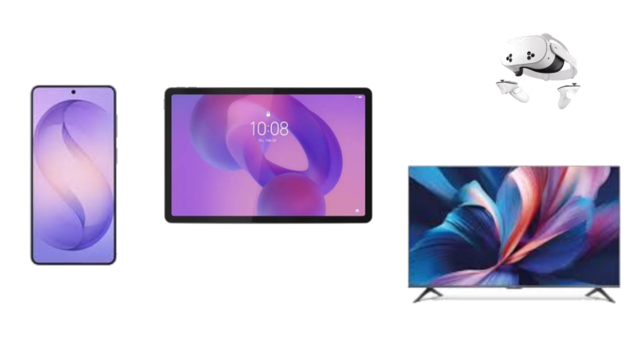

Introducción a Android y su ecosistema
En este apartado se presentará una visión general de Android, su sistema operativo y su ecosistema. Hoy en día, los dispositivos móviles son una parte integral de nuestra vida cotidiana, y Android es uno de los sistemas operativos más populares en el mundo. Comprender su funcionamiento y su ecosistema es esencial para cualquier desarrollador que desee crear aplicaciones móviles.
Conocer estos dispositivos, nos ayudará a entender mejor cómo interactúan con el sistema operativo y cómo podemos aprovechar sus características para desarrollar aplicaciones más eficientes y atractivas. Es importante mencionar que estos dispositivos a diferencia de los ordenadores personales, tienen limitaciones de recursos, como memoria y capacidad de procesamiento, lo que hace que la optimización del rendimiento sea un aspecto crucial en el desarrollo de aplicaciones móviles.
Cuando se habla de dispositivos móviles, nos referimos a aquellos que son portátiles y que permiten la comunicación y el acceso a información en cualquier lugar. Estos dispositivos incluyen teléfonos inteligentes, tabletas, relojes inteligentes y otros dispositivos portátiles. La popularidad de estos dispositivos ha llevado a un aumento significativo en la demanda de aplicaciones móviles, lo que hace que el desarrollo para Android sea una habilidad valiosa en el mercado laboral actual.
En muchas ocasiones, se hace referencia a los dispositivos móviles como "smartphones" o "teléfonos inteligentes", que son aquellos que combinan las funciones de un teléfono tradicional con capacidades avanzadas de computación y conectividad a Internet. Estos dispositivos permiten a los usuarios realizar una amplia variedad de tareas, desde la comunicación hasta el entretenimiento y la productividad. Hoy en día no solo se aplica a los teléfonos, sino que también se extiende a otros dispositivos portátiles como tabletas, relojes inteligentes y dispositivos de realidad aumentada.
En este contexto, Android se ha convertido en el sistema operativo más utilizado en dispositivos móviles, ofreciendo una plataforma flexible y personalizable para desarrolladores y fabricantes de dispositivos. Su ecosistema incluye una amplia gama de aplicaciones, servicios y herramientas que permiten a los desarrolladores crear experiencias únicas para los usuarios.
Dispositivos móviles y sistemas operativos
Comenzaremos por definir qué es un dispositivo móvil y cómo se diferencia de otros tipos de dispositivos electrónicos. Un dispositivo móvil es un aparato electrónico portátil que permite la comunicación y el acceso a información en cualquier lugar. Estos dispositivos suelen ser compactos, ligeros y fáciles de transportar, lo que los hace ideales para su uso en movimiento.
Algunas de las características clave de los dispositivos móviles incluyen:
- Portabilidad: Los dispositivos móviles son pequeños y ligeros, lo que permite a los usuarios llevarlos consigo a todas partes.
- Conectividad: La mayoría de los dispositivos móviles cuentan con capacidades de conectividad, como Wi-Fi, Bluetooth y redes móviles, lo que permite a los usuarios acceder a Internet y comunicarse con otros dispositivos.
- Interfaz táctil: Muchos dispositivos móviles cuentan con pantallas táctiles que permiten a los usuarios interactuar con el dispositivo mediante gestos y toques, lo que facilita la navegación y el uso de aplicaciones.
- Sensores: Los dispositivos móviles suelen incluir una variedad de sensores, como acelerómetros, giroscopios y sensores de proximidad, que permiten a las aplicaciones aprovechar estas capacidades para ofrecer experiencias más interactivas y personalizadas.
Podemos identificar varios tipos de dispositivos móviles, entre los que se incluyen:
- Teléfonos inteligentes (smartphones): Dispositivos que combinan las funciones de un teléfono tradicional con capacidades avanzadas de computación y conectividad a Internet.
- Tabletas: Dispositivos con pantallas más grandes que los teléfonos inteligentes, diseñados para ofrecer una experiencia de usuario más inmersiva y versátil, ideales para la navegación web, la lectura de libros electrónicos y el consumo de contenido multimedia.
- Relojes inteligentes (smartwatches): Dispositivos portátiles que se llevan en la muñeca y ofrecen funciones de seguimiento de actividad física, notificaciones y otras aplicaciones, permitiendo a los usuarios mantenerse conectados sin necesidad de sacar su teléfono del bolsillo.
- Dispositivos de realidad aumentada (AR): Dispositivos que combinan el mundo real con elementos virtuales, ofreciendo experiencias interactivas y enriquecidas para los usuarios, como juegos, aplicaciones educativas y herramientas de productividad.
- Otros dispositivos portátiles: Existen otros tipos de dispositivos móviles, como auriculares inteligentes, gafas inteligentes y dispositivos de seguimiento de salud, que ofrecen funcionalidades específicas y se integran con el ecosistema de Android.
- Dispositivos de Juegos portátiles: Consolas de videojuegos portátiles que permiten a los usuarios jugar en cualquier lugar, ofreciendo una experiencia de juego inmersiva y accesible.

A la hora de trabajar con estos dispositivos, es importante tener en cuenta las limitaciones de recursos que presentan, algunos de ellos son:
- Memoria: Los dispositivos móviles suelen tener una cantidad limitada de memoria RAM y almacenamiento interno, lo que puede afectar el rendimiento de las aplicaciones si no se gestionan adecuadamente los recursos.
- Capacidad de procesamiento: Los procesadores de los dispositivos móviles suelen ser menos potentes que los de los ordenadores personales, lo que puede limitar la capacidad de ejecución de aplicaciones complejas y exigir una optimización del rendimiento.
- Duración de la batería: La duración de la batería es un factor crítico en los dispositivos móviles, ya que los usuarios esperan que sus dispositivos funcionen durante todo el día sin necesidad de recargarlos. Los desarrolladores deben tener en cuenta el consumo de energía de sus aplicaciones para garantizar una experiencia de usuario satisfactoria.
- Conectividad: La calidad y disponibilidad de la conectividad a Internet puede variar según la ubicación y el tipo de red, lo que puede afectar la experiencia del usuario al utilizar aplicaciones que dependen de la conexión a Internet.
- Compatibilidad de hardware: Los dispositivos móviles pueden variar en términos de hardware, como tamaño de pantalla, resolución, capacidades de cámara y sensores, lo que puede requerir que los desarrolladores adapten sus aplicaciones para garantizar una experiencia de usuario consistente en diferentes dispositivos.
- Refrigación y temperatura: Los dispositivos móviles pueden calentarse durante el uso intensivo, lo que puede afectar el rendimiento y la duración de la batería. Los desarrolladores deben tener en cuenta estos factores al diseñar aplicaciones que requieran un uso intensivo de recursos.
Software y sistemas operativos móviles
Cuando hablamos de software y sistemas operativos móviles, nos referimos a los programas y plataformas que permiten a los dispositivos móviles funcionar y ejecutar aplicaciones. Un sistema operativo móvil es el software principal que gestiona los recursos del dispositivo, proporciona una interfaz de usuario y permite la ejecución de aplicaciones.
En la actualidad, existen varios sistemas operativos móviles en el mercado, siendo los más populares Android e iOS. Cada uno de estos sistemas operativos tiene sus propias características, ventajas y desventajas, lo que influye en la experiencia del usuario y en el desarrollo de aplicaciones.
- Android: Desarrollado por Google, Android es un sistema operativo de código abierto basado en el núcleo de Linux. Es el sistema operativo más utilizado en dispositivos móviles a nivel mundial y ofrece una amplia gama de características y funcionalidades para desarrolladores y usuarios. Android permite la personalización del sistema operativo y la creación de aplicaciones mediante el uso de herramientas y lenguajes de programación como Java y Kotlin.
- iOS: Desarrollado por Apple, iOS es un sistema operativo propietario utilizado exclusivamente en dispositivos de la marca Apple, como iPhone, iPad y iPod Touch. iOS se caracteriza por su diseño intuitivo, su seguridad y su ecosistema cerrado, lo que significa que las aplicaciones deben pasar por un proceso de revisión antes de ser publicadas en la App Store. El desarrollo de aplicaciones para iOS se realiza principalmente utilizando el lenguaje de programación Swift y el entorno de desarrollo Xcode.
- Otros sistemas operativos: Además de Android e iOS, existen otros sistemas operativos móviles menos populares, como Windows Phone, BlackBerry OS y Tizen. Estos sistemas operativos tienen una cuota de mercado más pequeña y ofrecen características y funcionalidades específicas para ciertos dispositivos y usuarios. Algunos ya estan descontinuados, como Windows Phone y BlackBerry OS, mientras que otros, como Tizen, se utilizan en dispositivos específicos como televisores inteligentes y relojes inteligentes.
Sistema operativo Android
Vamos a centrarnos en Android, el sistema operativo más utilizado en dispositivos móviles. Android es un sistema operativo basado en Linux que ha sido desarrollado por Google y es de código abierto, lo que significa que los desarrolladores pueden acceder al código fuente y modificarlo según sus necesidades.
Android en la actualidad es un sistema operativo muy versátil y flexible, que permite a los fabricantes de dispositivos personalizarlo y adaptarlo a sus necesidades. Esto ha llevado a una gran diversidad de dispositivos Android en el mercado, desde teléfonos inteligentes y tabletas hasta televisores inteligentes y dispositivos portátiles.
Algunas de sus características clave incluyen:
-
Gestión dinámica de memoria y procesos: El sistema operativo destruye procesos en segundo plano si necesita liberar memoria para la app activa.
-
Sistema de permisos en tiempo de ejecución (Runtime Permissions): Protege la privacidad del usuario solicitando acceso a la cámara, ubicación o contactos solo cuando la función lo requiere.
-
Almacenamiento estructurado: Uso de bases de datos relacionales locales (Room/SQLite), DataStore / SharedPreferences para preferencias de usuario y almacenamiento de archivos privados/públicos.
-
Conectividad y trabajo en segundo plano: WorkManager para tareas diferibles y garantizadas, servicios en primer plano (Foreground Services) para tareas continuas.
Otro de los aspectos importantes de Android es su ecosistema, que incluye una amplia gama de aplicaciones, servicios y herramientas que permiten a los desarrolladores crear experiencias únicas para los usuarios. El ecosistema de Android se basa en la colaboración entre Google, los fabricantes de dispositivos y los desarrolladores de aplicaciones, lo que ha llevado a un crecimiento significativo en la cantidad y calidad de las aplicaciones disponibles en la plataforma.
Historia de Android
Veamos la historia de Android, desde sus inicios hasta la actualidad. Android fue fundado en 2003 por Andy Rubin, Rich Miner, Nick Sears y Chris White. Inicialmente, el objetivo de la empresa era desarrollar un sistema operativo para cámaras digitales, pero pronto se dieron cuenta del potencial del mercado de dispositivos móviles y decidieron cambiar su enfoque hacia los teléfonos inteligentes.
En 2005, Google adquirió Android Inc. y comenzó a invertir en su desarrollo. En 2008, se lanzó la primera versión de Android, y en 2010, se lanzó Android 2.0, que incluyó características importantes como el soporte para múltiples cuentas y la posibilidad de usar aplicaciones de terceros. Durante los años siguientes, Android continuó evolucionando y mejorando, con nuevas versiones que introdujeron características como la multitarea, la personalización de la interfaz de usuario y el soporte para nuevas tecnologías como NFC y Bluetooth.
En los últimos años, Android ha seguido creciendo y consolidándose como el sistema operativo móvil más popular del mundo, con una cuota de mercado que supera el 70% a nivel global. Google continúa desarrollando nuevas versiones de Android, cada una con mejoras en rendimiento, seguridad y funcionalidad, lo que garantiza que la plataforma siga siendo relevante y atractiva para los desarrolladores y usuarios por igual.
Actualmente en la versión 17, Android 17, lanzada en 2026, incluye mejoras significativas en la privacidad del usuario, optimización del rendimiento y nuevas herramientas para desarrolladores. Esta versión también introduce nuevas APIs y funcionalidades que permiten a los desarrolladores crear aplicaciones más innovadoras y atractivas para los usuarios.
Ecosistema de Android
Vamos a explorar el ecosistema de Android, que incluye una amplia gama de aplicaciones, servicios y herramientas que permiten a los desarrolladores crear experiencias únicas para los usuarios. El ecosistema de Android se basa en la colaboración entre Google, los fabricantes de dispositivos y los desarrolladores de aplicaciones, lo que ha llevado a un crecimiento significativo en la cantidad y calidad de las aplicaciones disponibles en la plataforma.
Uno de los aspectos más importantes del ecosistema de Android, es su arquitectura abierta y flexible, que permite a los desarrolladores crear aplicaciones para una amplia variedad de dispositivos y plataformas. Esto ha llevado a un crecimiento significativo en la cantidad y calidad de las aplicaciones disponibles en la plataforma, lo que a su vez ha contribuido al éxito de Android como sistema operativo móvil.

Como vemos en la figura, el ecosistema de Android se compone de varios elementos clave, que incluyen:
- Linux Kernel: El núcleo del sistema operativo Android, que proporciona la base para la gestión de recursos y la comunicación entre el hardware y el software.
- Hardware Abstraction Layer (HAL): Una capa de abstracción que permite a los desarrolladores interactuar con el hardware del dispositivo sin necesidad de conocer los detalles específicos del mismo.
- Android Runtime (ART): El entorno de ejecución de Android, que permite la ejecución de aplicaciones desarrolladas en Java y Kotlin mediante la compilación de código en tiempo de ejecución.
- Librerías nativas: Un conjunto de bibliotecas y APIs que proporcionan funcionalidades básicas para el desarrollo de aplicaciones, como gráficos, audio, redes y almacenamiento.
- Framework de aplicaciones: Un conjunto de bibliotecas y APIs que permiten a los desarrolladores crear aplicaciones para Android utilizando lenguajes de programación como Java y Kotlin.
- Aplicaciones: Las aplicaciones desarrolladas para Android, que pueden ser descargadas e instaladas desde la Google Play Store u otras fuentes, y que ofrecen una amplia variedad de funcionalidades y servicios a los usuarios.
Todo este conjunto de elementos conforma el ecosistema de Android, que permite a los desarrolladores crear aplicaciones innovadoras y atractivas para los usuarios, y a los fabricantes de dispositivos ofrecer experiencias únicas y personalizadas en sus productos.
Desarrollo para dispositivos móviles
Veamos ahora, como podemos desarrollar para dispositivos móviles, centrándonos después en el desarrollo de aplicaciones para Android. El desarrollo de aplicaciones móviles implica la creación de software que se ejecuta en dispositivos móviles, como teléfonos inteligentes y tabletas, y que permite a los usuarios realizar una amplia variedad de tareas y actividades.
Para cada dispositivo o sistema operativo móvil, existen diferentes herramientas y lenguajes de programación que los desarrolladores pueden utilizar para crear aplicaciones. En el caso de Android, los desarrolladores pueden utilizar lenguajes como Java y Kotlin, así como otros frameworks y bibliotecas basados en la utilización de otros lengaujes basadps en web, como JavaScript, HTML y CSS, para crear aplicaciones híbridas que se ejecutan en múltiples plataformas.
En resumidas cuentas para desarrollar aplicaciones para dispositivos móviles, los desarrolladores deben tener en cuenta las características y limitaciones de los dispositivos, así como las necesidades y expectativas de los usuarios. Esto implica la creación de interfaces de usuario intuitivas y atractivas, la optimización del rendimiento y la gestión eficiente de los recursos del dispositivo. Veamos estas diferencias:
- Desarrollo Nativo: Implica el uso de lenguajes de programación y herramientas específicas para cada plataforma, como Java y Kotlin para Android, y Swift para iOS. Este enfoque permite aprovechar al máximo las capacidades del dispositivo y ofrecer un rendimiento óptimo, pero requiere conocimientos específicos de cada plataforma y puede resultar en un mayor tiempo de desarrollo.
- Desarrollo Híbrido: Implica el uso de tecnologías web, como HTML, CSS y JavaScript, para crear aplicaciones que se ejecutan en múltiples plataformas mediante el uso de frameworks como React Native, Flutter o Ionic. Este enfoque permite un desarrollo más rápido y eficiente, pero puede tener limitaciones en cuanto a rendimiento y acceso a las funcionalidades del dispositivo.
- Motores de Juegos: Implica el uso de motores de juegos como Unity o Unreal Engine para crear aplicaciones y juegos que se ejecutan en múltiples plataformas. Este enfoque permite la creación de experiencias interactivas y atractivas, pero puede requerir conocimientos específicos de desarrollo de juegos y puede tener limitaciones en cuanto a rendimiento y acceso a las funcionalidades del dispositivo.
Info
Durante este curso, veremos algunas de estas herramientas como el motor de videojuegos Godot, que nos permitirá crear aplicaciones y juegos para dispositivos móviles de manera eficiente y atractiva. Godot es un motor de juegos de código abierto que ofrece una amplia gama de funcionalidades y herramientas para el desarrollo de aplicaciones y juegos, y que permite a los desarrolladores crear experiencias únicas para los usuarios.
Desarrollo de aplicaciones Android
Una vez visto como se desarrolla para dispositivos móviles, vamos a centrarnos en el desarrollo de aplicaciones para Android. El desarrollo de aplicaciones Android implica la creación de software que se ejecuta en dispositivos que utilizan el sistema operativo Android, y que permite a los usuarios realizar una amplia variedad de tareas y actividades.
Para comenzar, vamos a ver las herramientas que necesitamos para desarrollar aplicaciones Android, que incluyen:
- JDK (Java Development Kit): Un conjunto de herramientas y bibliotecas necesarias para desarrollar aplicaciones en Java, que es uno de los lenguajes de programación utilizados para crear aplicaciones Android. Se requiere una versión de JDK 17 o superior para desarrollar aplicaciones Android modernas.
- Android Studio: El entorno de desarrollo integrado (IDE) oficial para el desarrollo de aplicaciones Android, que proporciona herramientas y funcionalidades para crear, depurar y probar aplicaciones.
- Gradle: Un sistema de automatización de compilación que se utiliza para gestionar las dependencias y construir aplicaciones Android de manera eficiente.
- Android SDK (Software Development Kit): Un conjunto de herramientas y bibliotecas necesarias para desarrollar aplicaciones Android, que incluye APIs, emuladores y herramientas de depuración.
- Emuladores: Herramientas que permiten simular dispositivos Android en un ordenador, lo que facilita la prueba y depuración de aplicaciones sin necesidad de utilizar un dispositivo físico.
Durante este curso, aprenderemos a utilizar estas herramientas para crear aplicaciones Android de manera eficiente y atractiva, y a aprovechar al máximo las capacidades del sistema operativo y los dispositivos móviles.
Note
Es importante mencionar que, aunque el desarrollo de aplicaciones Android se centra en el uso de Java y Kotlin, también existen otras herramientas y lenguajes de programación que permiten crear aplicaciones Android, como C++ y Python. Sin embargo, estos enfoques pueden tener limitaciones en cuanto a rendimiento y acceso a las funcionalidades del dispositivo, por lo que se recomienda utilizar Java o Kotlin para el desarrollo de aplicaciones Android modernas.